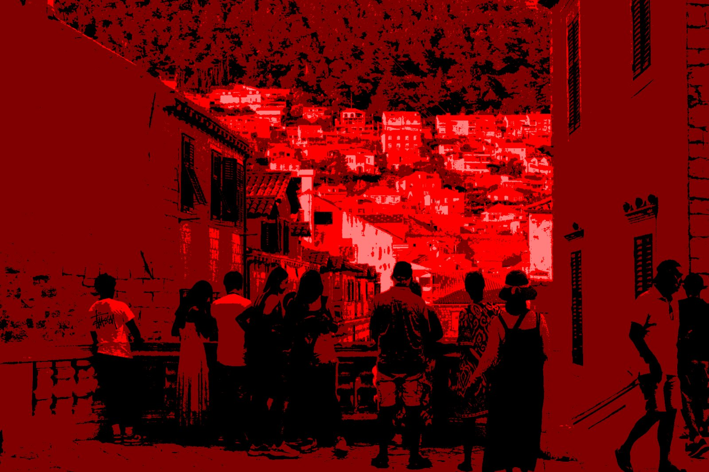

05 / 09
Desde arriba todo permanece
- Año
- 2026
- Medidas
- 10 × 15 cm
- Técnica
- Fotografía digital intervenida mediante posterización y superposición digital
La escena colectiva se contrapone a la inmensidad del paisaje urbano del fondo. La obra reflexiona sobre cómo las experiencias individuales se integran dentro de estructuras sociales y espacios compartidos. Aun así, cada figura continúa habitando su propia percepción interna del lugar.